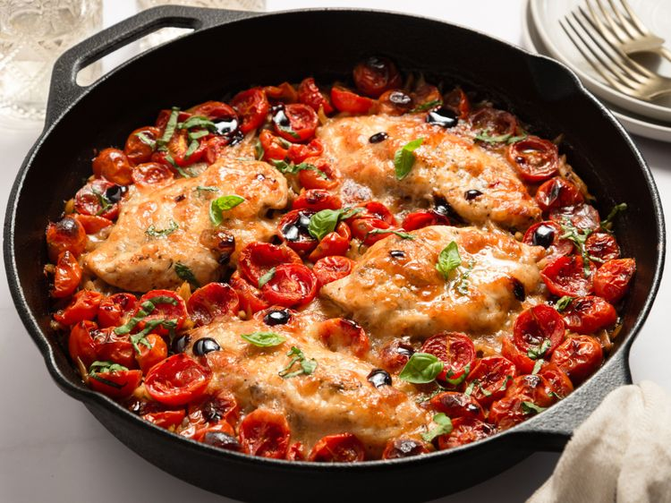

Balsamic Chicken Recipe

Home
Description
This balsamic chicken dish, ready in just over 30 minutes, is made with herb-seasoned chicken breasts drizzled with balsamic glaze, and baked with orzo, tomatoes, and mozzarella. It's full of flavor and perfect for a weeknight dinner.
Stats
Preparation Time: 10 mins
Cook Time: 30 mins
Total Time: 40 mins
Servings: 4
Ingredients
- 2 skinless, boneless chicken breasts
- ½ teaspoon Cantanzaro herbs
- ½ cup minced onion
- ¼ teaspoon garlic granules
- ¼ teaspoon onion powder
- salt and freshly ground black pepper to taste
- 1 tablespoon olive oil
- 1 pint cherry tomatoes, halved
- 8 ounces fresh mozzarella, sliced
- ½ teaspoon dried oregano
- ⅛ teaspoon white sugar
- 1 cup orzo
- 1 ½ cups chicken broth
- 2 tablespoons balsamic vinegar
- fresh basil leaves, very thinly sliced
- 1 tablespoon balsamic glaze, or as needed
Steps
- Gather ingredients. Preheat the oven to 425 degrees F (220 degrees C).
- Slice chicken breasts in half horizontally to create 4 thin chicken breasts.
- Stir Cantazaro herbs, garlic granules, onion powder, salt, and black pepper together in a small bowl; season chicken on all sides with mixture.
- Pour olive oil into a deep cast iron skillet or other ovenproof skillet and place over medium-high heat until oil is hot. Add chicken and sear until golden, 3 to 4 minutes per side. Turn off heat; remove chicken to a plate.
- Pour orzo into the skillet; add chicken broth and balsamic vinegar. Add chicken back to the skillet along with any accumulated juices. Scatter cherry tomatoes around, and top chicken with slices of fresh mozzarella.
- Bake in the preheated oven until an instant read thermometer, inserted near the center of chicken, reads 165 degrees F (74 degrees C), about 20 minutes. If needed, turn on the oven’s broiler and broil until cheese is golden, about 2 minutes.
- Sprinkle with basil and drizzle with balsamic glaze to taste. .
Nutrition Facts
Per serving: 383 calories;
Total Fat 16g;
Saturated Fat 7g;
Cholesterol 89mg;
Sodium 689mg;
Total Carbohydrate 24g;
Dietary Fiber 2g;
Total Sugars 7g;
Protein 33g;
Vitamin C 10mg;
Calcium 265mg;
Iron 2mg;
Potassium 452mg